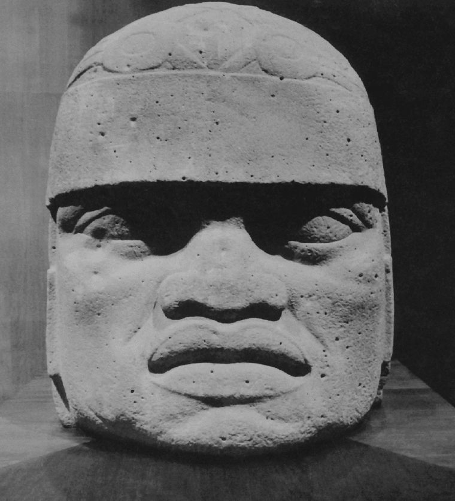

迁居美洲大陆的移民几乎没带来什么文化，因为他们来自欧亚大陆最不发达的地区之一——西伯利亚东北部。当然，他们都是组成小集团的猎人，仅拥有粗糙的石器，没有陶器；可能除狗外，也没有其他已驯化的动物。他们进入的是一块无人居住的大陆，因此他们能够毫无约束地形成自己的风俗，而没有雅利安人迁移印度河流域或亚该亚人和多利安人移居希腊时所受到的当地居民的影响。
在以后几千年中，美洲印第安人的确发展了丰富多彩的种种文化；他们不仅使这些文化适应他们所遇到的范围广阔的自然环境，而且还使这些文化互相适应。有些印第安人仍停留在狩猎团体的阶段，而另一些印第安人则发展起王国和帝国。他们的宗教信仰包括所有已知的种类，其中还有一神教。他们使用约2000种截然不同的语言，有些语言相互间的差异就像汉语和英语间的差别一样。这表明在这里如同在整个东半球一样，语言的变化极为丰富；据悉，公元1500年，存在于东半球的语言约3000种。这些语言不论在词汇，还是在其他方面，都并不原始。莎士比亚使用了大约2.4万个词，钦定《圣经》使用了约7000个词，而墨西哥的那瓦特语则使用了2.7万个词，被认为是世界上文化最落后的民族之一的火地岛上的雅甘人至少也拥有3万个词。

图115 奥尔梅克头像。这个巨大的头像出土于圣洛伦索，现存于墨西哥城的国立人类学博物馆。该头像由玄武岩雕成，可能是奥尔梅克统治者的肖像。奥尔梅克文化兴盛于公元前1500年至前800年间。
考虑到各类制度和习俗，人类学者将美洲大陆分成大平原地区、东部森林地区、西北沿海地区等22个文化区。一种更简单的分类法是以获得食物的方式为基础，将美洲文化分成三类：渔猎采集文化、中级农业文化和高级农业文化。这种分类不仅更加简单，而且从世界历史的观点看，也更富有意义，因为它有助于解释印第安人对欧洲入侵者的不同反应。
高级农业文化存在于中美洲（墨西哥中部和南部、危地马拉和洪都拉斯）和安第斯高原地区（厄瓜多尔、秘鲁、玻利维亚和智利北部）；中级农业文化一般位于高级农业文化的邻近地区；而食物采集文化则位于更遥远的地区——南美洲南部及北美洲西部和北部。值得注意的是，在美洲，农业首先在与欧亚大陆的农业发源地中东极为相似的一些地区发展起来；这些地区即高原地区，在那里，无须为准备农田而大面积地砍伐森林，那里有足够的降雨量使各种作物得以生长，而且还拥有大量可培植的、具有潜在高产特性的土生植物。
印第安人培植了100多种植物，几乎与整个欧亚大陆所培植的植物一样多，这的确是一个非凡的成就。如今，美国50%以上的农产品都来自由印第安人驯化的各种作物。而且，我们正在逐步认识到，印第安人所种植的某些植物具有较好的食品价值，但却为欧洲移民所忽视。一个例子是籽粒苋属植物，这种植物对阿兹特克人来说，就如同玉米和大豆一样重要。他们将这种苋属植物与人血混在一起，按做蛋糕的方式做成诸神的神像，并把这些神像给那些虔诚的人吃。西班牙人认为这种仪式太野蛮，是对基督教圣餐的一种嘲弄。因此，西班牙人通过判处任何种植或拥有苋属植物的人死刑来禁止这种仪式。然而，这种植物却幸存到今天。在墨西哥，用爆炒的苋属植物和蜂蜜制成的甜食仍然颇受欢迎。同时，科学家们也开始认识到这种籽粒的价值：它可以磨成面，也可以像玉米一样爆成玉米花，而且还可以用来制作面包、饼干、点心、汤、粥、团子和饮料。除了这一广泛用途外，最近美国国家科学院的一份报告指出，苋属植物作为蛋白质、维生素和矿物质的来源，优于其他谷物。同前面提到的培高田地农业技术（见第二章第三节）一样，现在承认苋属植物为“未来的谷物”的做法，突出了这样一个事实：我们可以从史前的祖先那里接受种种教训，甚至在我们这一“高科技”时代中，也是如此。
玉米几乎是所有地区的主要产品，最初只是一种杂草，其穗还没有一个人的拇指甲大。印第安人将它培育成一种长棒子上长满一排排种子的作物。他们彻底培植了玉米，使它变得只有依靠人类才能生存；如果人们不种它，它就会灭绝，因为培植后的玉米已不能散播自己的种子——玉米粒。印第安人利用大量有毒植物的技术，也给人以深刻印象。其中之一是木薯属植物，即美国的木薯淀粉，印第安人去掉其中致命的毒素，保留下淀粉。印第安人种植的其他重要植物有：南瓜、马铃薯、西红柿、花生、可可豆、烟草，以及含有大量蛋白质的豆类植物。印第安人留传下来的药用植物有：药鼠李、可卡因、山金车花、因皮卡克和奎宁等。在发现新大陆以前，美洲种植的植物没有一种是在东半球培植的，这一事实最终证明两半球的农业各有其独立的起源。
印第安人的农业发源地，也是他们最早进一步发展农业、并逐渐形成“高级农业文化”的地区。这反过来又深深地改变了印第安人的生活方式。总的看来，其结果和在欧亚大陆一样，大大增加了定居的人口，促进了那些与最低限度生活没有直接联系的文化活动。换句话说，正是在这些高级农业文化中，有可能发展起在某些方面可与西非相比较的庞大帝国和复杂文明。不幸的是，美洲本土的这些文明突然被西班牙人所制服，结果，除印第安人培植的宝贵植物外，几乎没留下什么东西。